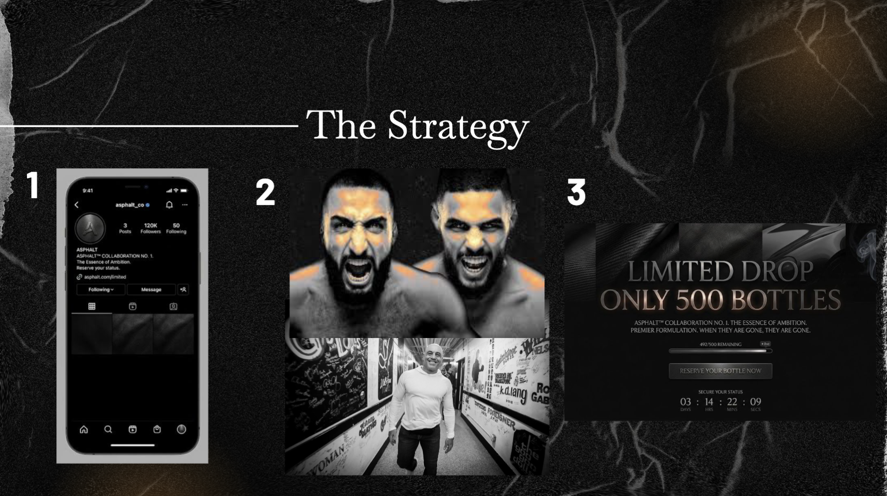

software engineer and marketing professional
I'm a fourth-year student at Northwestern University pursuing combined Bachelor's and Master's degrees in Computer Science with a minor in Art and a certificate in Integrated Marketing Communications from the Medill School of Journalism. My goal is to bring an interdisciplinary perspective to software engineering by incorporating principles from human-computer interaction, mathematics, consumer psychology, and graphical interface design.
"Ananya is a dependable and creative team member who consistently delivers high-quality work. Her ability to analyze complex problems and communicate solutions clearly has been invaluable to our projects."
"Ananya has consistently demonstrated a strong work ethic and a positive attitude. Her ability to collaborate effectively with others has made her a pleasure to work with."
From brief to execution — a detailed look at how I approach communications strategy.
The town of Hawkins faced a crisis of public trust following a series of unexplained disasters, disappearances, and government cover-ups. The challenge was to design a mayoral campaign for candidate Maya Brooks that addressed residents' fears without inciting panic. We needed to acknowledge the threats the town faced while shifting the focus toward practical recovery, mental health, and community stability, positioning Maya as a leader who prioritizes families and holistic safety over government denial.
Our primary audience was parents and caregivers, a demographic that truly needed stability and youth protection. We centered our messaging around the slogan 'Healing Hawkins Together,' focusing on trauma-informed responses and neighborhood recovery rather than monster-containment theories. To reach voters, I designed a communication strategy that relied on empathetic channels like parent-focused podcasts, PTA meetings, and local news interviews. We prioritized grass-roots engagement to frame Maya as a relatable community advocate rather than a traditional politician.
I developed a comprehensive campaign schedule with community-driven events like healing circles, town halls, and school visits. For our media plan, I focused on organic social media spotlights, targeted ads, and we came up with a 'dog mayor' endorsement. In addition to outlining the schedule and communication strategy, I served as the face of the campaign by portraying Maya Brooks in a live mayoral debate. During the debate, I utilized our prepared talking points to pivot from opponent attacks regarding containment plans back to our core message of community healing and family safety.
We needed to launch an unconventional cologne, Asphalt™, where we chose to target 14-22 year old men while facing a simultaneous competitor launch. The challenge was managing public skepticism of a product that we chose to position as heavily, white rapidly establishing market dominance before our rival could gain any traction.
We positioned Asphalt™ as an attainable status symbol representing ambition. We leaned into a polarizing, high-status aesthetic, targeting red-pilled male podcasters and influencers to entrench the scent into modern masculine culture. By anticipating and accepting pushback from broader audiences, we used the resulting controversy to build insider loyalty among our core demographic.
I developed the core launch strategy, beginning with a mystery phase of blank black squares posted by our influencer partners. I then structured a series of artificial, limited-edition product drops to manufacture scarcity and demand. Additionally, I directed the campaign's visual aesthetic, utilizing dark tones, metallic finishes, and a trophy-shaped bottle, to outsell our competitor and capture our target audience.
A selection of full-length deliverables across formats and audiences.

Campaign Sprint 3
Content sourced from Campaign Sprint 4
I am aware of the video circulating of an incident that occurred last night. I want to extend my sincere apology to the employees and the customers impacted by my actions. I did not treat you with the respect you deserved in that moment, and I deeply regret my behavior. Having the responsibility of the United States is taxing and I had a lapse of judgment. I want you all to know that despite my actions last night, protecting the citizens of the United States is my main priority and I will continue to do so.
Last night, Homelander was involved in an incident that has understandably raised public concern. While we do not condone the behavior shown in the video, we recognize the immense pressure and responsibility that Homelander carry every day in protecting the American people. We are currently reviewing the full context of the situation and remain confident in Homelander’s long-standing commitment to national safety and security. We sincerely apologize to the employees and customers affected by the incident and appreciate the public’s patience as we continue to address this matter responsibly.
Vought is aware of the incident involving Homelander that took place at VoughtBurger last night. We are interviewing those most affected and determining the most productive course of action. We believe this can be a learning opportunity for all involved. Please watch this space for any updates.
Vought would like to clarify the facts of the incident at VoughtBurger last night. Rumors have been spread that misrepresent the situation and paint Homelander in a negative light. We are not defending Homelander’s actions nor his words, but he did not use any slurs or purposefully inflammatory language.
Observations on strategic comms, campaigns, and building a voice.
As a marketing professional, it is critical to know how to differentiate your product and promote it according to the target audience you have selected. Given that most consumer products are not unique or patented, there is a high chance that the brands we are working with have competitors selling effectively identical goods, so we must be aware of strategies to highlight our product on the shelf. This could be by elevating certain characteristics of our product to appeal to a sense of luxury, or by creating associations with certain ideologies to appeal to groups that identify with them. In this way, completely ordinary products that have no USPs relative to their competitors can shine for their specific segments. Liquid Death is a packaged water brand that was founded in 2018, but has recently acquired a billion-dollar valuation as of 2024. This brand is an excellent example of differentation in a market wherein the product is completely identical: water. By creating a heavy-metal aesthetic with the slogan 'Murder Your Thirst,' the company flipped the traditional narrative of water as a pure, rejuvenating wellness product into a symbol of punk-rock and counter-culture. Their massive valuation proves that when a product lacks a functional unique selling proposition, differentiated branding can carve out an entirely new niche.
In the marketing world, it is impossible to avoid public relations mistakes all of the time, and as future professionals, we should know which strategies to employ during specific crises. Often, it can be helpful to have a C-suite executive directly address the public to ensure the company appears genuine and humble. Other times, we may instead recommend that a public relations expert step in and handle front-facing dialogue to distance the company from the individual(s) at fault. Therefore, when we enter the marketing workplace, we should be able to accurately distinguish the nature of the situation and select the right face for the response. This month, Standard Chartered Bank CEO Bill Winters came under fire for referring to employees vulnerable to AI-related layoffs as 'low value human capital' during a conference. At first, the CEO attempted to clarify his verbiage through two LinkedIn posts that contained transcripts in an attempt to accurately situate his remarks, but commenters were not convinced. In this situation, Standard Chartered may have been better served by a media trained professional with the knowledge of how to correctly spin an obvious blunder on the CEO's part. Instead, social media users felt that his strategy backfired and seemed to double down on his word choice, casting light on what he truly believed regarding the value of human labor.
There are many strategies companies can choose to pursue when they misstep, including 'spin' and image restoration, and while they are all appropriate in certain situations, I like Stealing Thunder the most as it feels genuine and transparent. Stealing thunder refers to getting ahead of the media and reporting your mistake yourself before anyone else can. This makes the organization appear authentic, humble, and remorseful. 'Spin' falls into the manipulation category, image restoration can come off as inauthentic, and discourse of renewal may not work if the media has already influenced public opinion. Stealing thunder seems to be the most effective in most situations because it allows the company to put their perspective out first before the media is able to twist events and paint them in a negative light. In the 2024 E. coli crisis, McDonald’s utilized stealing thunder by getting ahead of the news to disclose the outbreak themselves. Instead of waiting for the CDC to report the narrative or for media reports to leak, the company proactively found the specific source, the onions they put on the burgers, and reported it immediately. By owning the bad news, they framed themselves as a transparent rather than negligent. This move effectively reduced the shock value of the story, prevented the media from being able to blow it out of proportion, and allowed McDonald's to maintain consumer trust despite a severe operational failure.